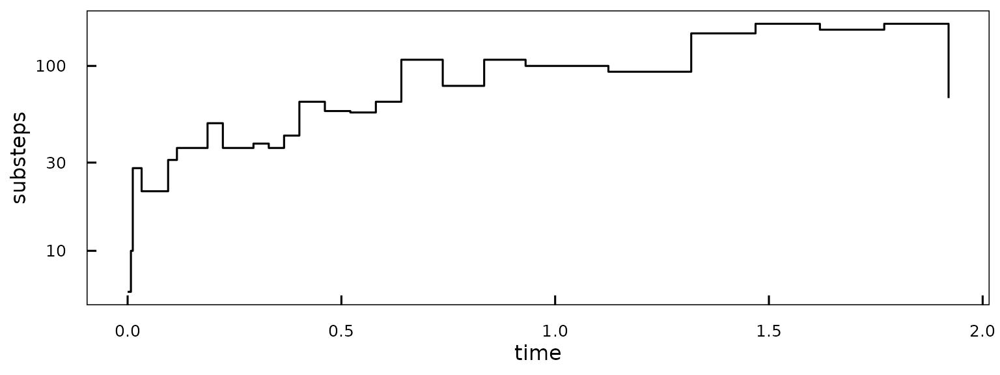

Reverse mode returns the gradient of a functional of the trajectory
in one backward sweep, at a cost independent of the number of
parameters. cppDE differentiates the discretization itself (discrete adjoint): forward and reverse
derivatives agree to the integration tolerance, and to rounding with
sensErrCon = FALSE in forward mode, which puts both on the
step grid of the values.
Model definition
derivMode of cppODE() selects the
derivatives a model returns: "forward" (default) the
tangent, "reverse" the cotangent,
"forward-reverse" the cotangent together with tangent and
curvature, "forward-forward" (the same as
deriv2 = TRUE) the Hessian of every state. The chapter
compares the reverse builds of the decay chain with a forward-forward
build.
eqns <- c(A = "-k1*A", B = "k1*A - k2*B")
parms <- c(A = 1, B = 0, k1 = 0.5, k2 = 0.2)
times <- seq(0, 10, by = 0.1)
fwd <- cppODE(eqns, derivMode = "forward-forward", modelname = "g4_fwd", compile = FALSE)
rev <- cppODE(eqns, derivMode = "reverse", modelname = "g4_rev", compile = FALSE)
fr <- cppODE(eqns, derivMode = "forward-reverse", modelname = "g4_fr", compile = FALSE)
fast <- cppODE(c(x = "-k*x + sin(100*time)*q"), derivMode = "reverse",
modelname = "g4_fast", compile = FALSE)
compile(fwd, rev, fr, fast, output = "guide4", cores = 2)Cotangents and gradients
A reverse model takes a cotangent \(w\) of shape [time, state] in solveODE() and
returns $cotangent, the gradient
\[\frac{\partial}{\partial \theta} \sum_{t, i} w_{t,i}\, x_i(t)\]
in the initial values and parameters \(\theta\), one row each. A cotangent with a single non-zero entry gives one row of the sensitivity matrix.
w <- matrix(0, length(times), 2, dimnames = list(NULL, c("A", "B")))
w[101, "B"] <- 1
outR <- solveODE(rev, times, parms, cotangent = w)
outR$cotangent
#> [,1]
#> A 0.2143297
#> B 0.1353352
#> k1 -0.1734738
#> k2 -1.5411580
outF <- solveODE(fwd, times, parms)
outF$tangent[101, "B", ] # ∂B(10)/∂θ from forward mode
#> A B k1 k2
#> 0.2143280 0.1353353 -0.1734757 -1.5411625
outR$cotangent[, 1] - solveODE(fwd, times, parms, sensErrCon = FALSE)$tangent[101, "B", ]
#> A B k1 k2
#> -1.387779e-16 -8.326673e-17 -1.471359e-06 1.946064e-08A third dimension holds several seeds, swept back together on one
forward pass; $cotangent then has one column per seed.
W <- array(0, c(length(times), 2, 2),
dimnames = list(NULL, c("A", "B"), c("A10", "B10")))
W[101, "A", "A10"] <- 1
W[101, "B", "B10"] <- 1
solveODE(rev, times, parms, cotangent = W)$cotangent
#> A10 B10
#> A 0.006737421 0.2143297
#> B 0.000000000 0.1353352
#> k1 -0.067379481 -0.1734738
#> k2 0.000000000 -1.5411580Gradient of an objective
For \(L = \sum_t (B(t) - y_t)^2\)
the cotangent is \(\partial L / \partial B(t)
= 2\,(B(t) - y_t)\). It depends on the solution, so the forward
pass runs first: with keepStore = TRUE and no cotangent,
solveODE() returns the values and keeps the checkpoints as
$store. A solve given the store at the same
times and parms integrates nothing and runs
the backward sweep alone.
y <- 0.4 * exp(-0.3 * times) * (1 - exp(-times))
first <- solveODE(rev, times, parms, keepStore = TRUE)
res <- first$variable[, "B"] - y
wL <- cbind(A = 0, B = 2 * res)
grad <- solveODE(rev, times, parms, cotangent = wL, store = first$store)$cotangent
cbind(reverse = grad[, 1], forward = 2 * colSums(res * outF$tangent[, "B", ]))
#> reverse forward
#> A 25.009083 25.00933
#> B 23.696642 23.69663
#> k1 7.042708 7.04377
#> k2 -74.692436 -74.69188A store may be reused for any number of cotangents and is freed at
the next garbage collection, which does not count the checkpoint memory.
releaseStore()
frees it at once; a solve given a released store integrates again.
releaseStore(first$store)Control of the backward sweep
By default the sweep runs on the step grid of the forward pass. A
grid that resolves the states need not resolve their derivatives: in
\(\dot x = -k x + \sin(100\, t)\, q\)
at \(q = 0\) the state is smooth while
\(\partial x/\partial q\) follows the
fast forcing, and the exact gradient of \(\sum_t x(t)\) in \(q\) has a closed form. Tighter tolerances
reduce the error of the sweep without removing it, since the states set
the grid. adjointControl(),
passed as adjoint, sets the sweep:
refine = TRUE holds each step to reltol and
abstol and sweeps a failing step again in substeps,
gradtol adds an absolute tolerance on the contribution of
each step to the gradient, and trace = TRUE returns the
grid as $adjoint (Grid and refinement of the
sweep).
tf <- seq(0, 2, by = 0.1)
pf <- c(x = 1, k = 1, q = 0)
Wf <- cbind(x = rep(1, length(tf)))
exact <- sum((sin(100*tf) - 100*cos(100*tf) + 100*exp(-tf)) / 10001)
val <- solveODE(fast, tf, pf, cotangent = Wf)
tgt <- solveODE(fast, tf, pf, cotangent = Wf, abstol = 1e-12, reltol = 1e-12)
chk <- solveODE(fast, tf, pf, cotangent = Wf,
adjoint = adjointControl(refine = TRUE, gradtol = 1e-9, trace = TRUE))
c(exact = exact, valueGrid = val$cotangent[["q", 1]], tight = tgt$cotangent[["q", 1]],
refined = chk$cotangent[["q", 1]])
#> exact valueGrid tight refined
#> 0.08342800 1.77299897 0.14272371 0.08366032
c(steps = length(chk$adjoint$h), substeps = sum(chk$adjoint$substeps))
#> steps substeps
#> 35 2104The refined sweep differentiates a slightly different trajectory than
the one the forward pass computed. $correction is the
first-order change of each seeded functional between the two, so value
plus correction is the value whose gradient
$cotangent is (value
correction).
chk$correction
#> [1] 0.0001015525$adjoint holds time and h of
every step of the sweep, the adjoint state lambda at each
step start, and under refine the substeps and
failures per step.
ggplot(data.frame(time = chk$adjoint$time, substeps = chk$adjoint$substeps),
aes(time, substeps)) +
geom_step() +
scale_y_log10()
Hessian of an objective
derivMode = "forward-reverse" differentiates the sweep
along the tangent (forward over reverse). Besides
$tangent and $cotangent it returns
$curvature, [state and parameter, direction, seed], the
derivative of $cotangent along each tangent direction:
under the default identity tangent, the Hessian of the seeded
functional. A cotangent that depends on the solution, such as \(2\,(B - y)\), passes the cotangent
derivative along the tangent as the argument curvature,
[time, state, seed, direction], here \(2\,\partial B / \partial \theta\); without
it the Hessian misses that term, the gradient not.
first <- solveODE(fr, times, parms, cotangent = wL)
res <- first$variable[, "B"] - y
wL <- cbind(A = 0, B = 2 * res)
cv <- array(0, c(length(times), 2, 1, 4), dimnames = list(NULL, c("A", "B"), NULL, NULL))
cv[, "B", 1, ] <- 2 * first$tangent[, "B", ]
outFR <- solveODE(fr, times, parms, cotangent = wL, curvature = cv)
H <- outFR$curvature[, , 1]
H
#> sens
#> theta A B k1 k2
#> A 33.35838 34.25193 19.61416 -166.85157
#> B 34.25193 50.10908 21.84923 -170.19220
#> k1 19.61415 21.84922 -24.36335 -45.21294
#> k2 -166.85170 -170.19226 -45.21335 678.74568The same Hessian from the forward-forward model, Gauss-Newton term plus residual term:
S <- outF$tangent[, "B", ]
H2 <- 2 * crossprod(S) + 2 * apply(res * outF$hessian[, "B", , ], c(2, 3), sum)
max(abs(H - H2))
#> [1] 0.0004218381The first call computes residual and tangent, any cotangent serves
there. keepStore is a reverse-only option, so a
forward-reverse objective solves twice. A tangent of fewer
columns gives Hessian-vector products, here the product with \(v = (0, 0, 1, -1)\):
v <- matrix(c(0, 0, 1, -1), 4, 1, dimnames = list(names(parms), "v"))
cv <- array(0, c(length(times), 2, 1, 1), dimnames = list(NULL, c("A", "B"), NULL, NULL))
cv[, "B", 1, 1] <- 2 * first$tangent[, "B", ] %*% v
Hv <- solveODE(fr, times, parms, tangent = v, cotangent = wL, curvature = cv)$curvature[, , 1]
cbind(Hv, H %*% v)
#> Hv v
#> A 186.46568 186.46574
#> B 192.04143 192.04143
#> k1 20.84939 20.84959
#> k2 -723.95912 -723.95903sensErrCon = TRUE (default) includes the tangents in the
error test of the forward pass; FALSE gives a step grid
that does not depend on the directions.
Choice of derivative mode
| need | derivMode |
result | details |
|---|---|---|---|
| sensitivities of every state, Gauss-Newton | "forward" |
$tangent |
Forward sensitivities |
| gradient of one functional, many parameters | "reverse" |
$cotangent |
Reverse mode |
| derivatives on a grid that misses them |
"reverse",
adjointControl(refine = TRUE)
|
$cotangent, $correction
|
Grid and refinement |
| Hessian of one functional | "forward-reverse" |
$curvature |
Forward over reverse |
| Hessian of every state |
"forward-forward",
deriv2 = TRUE
|
$hessian |
Sensitivities |
| events in reverse mode | any of the above | Events in reverse mode | |
| SUNDIALS adjoint | cvode() |
$cotangent |
cvode() and the CVODES adjoint |